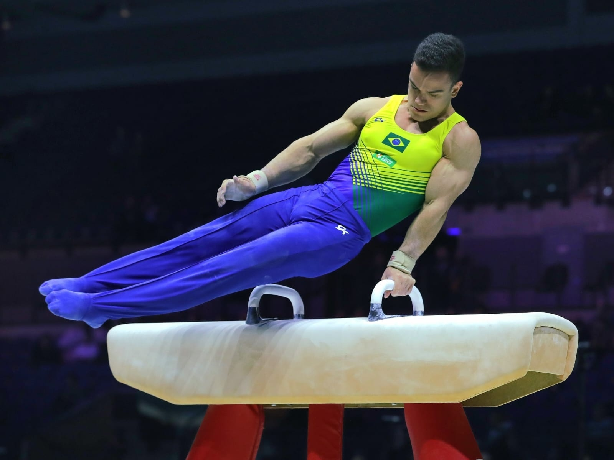
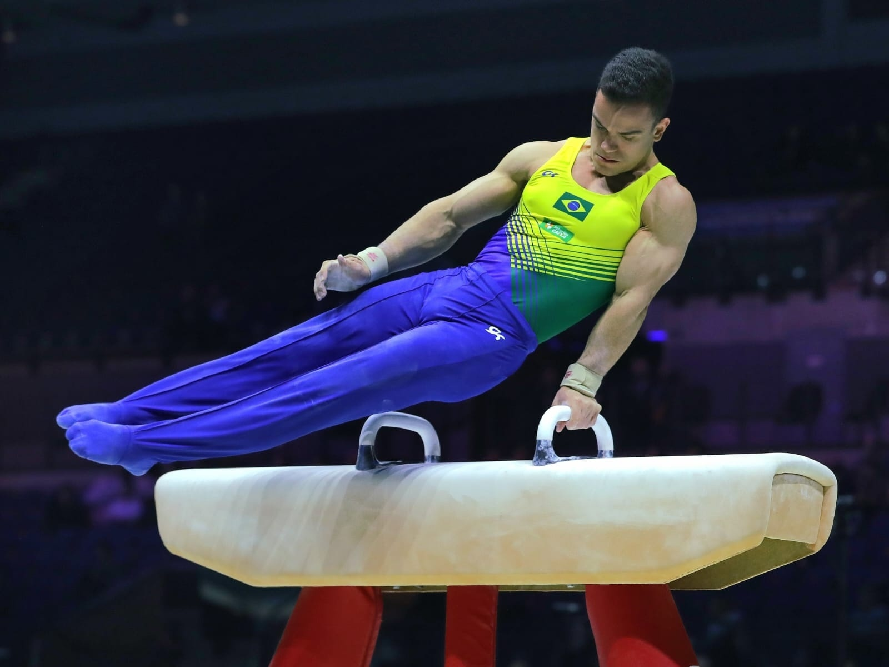
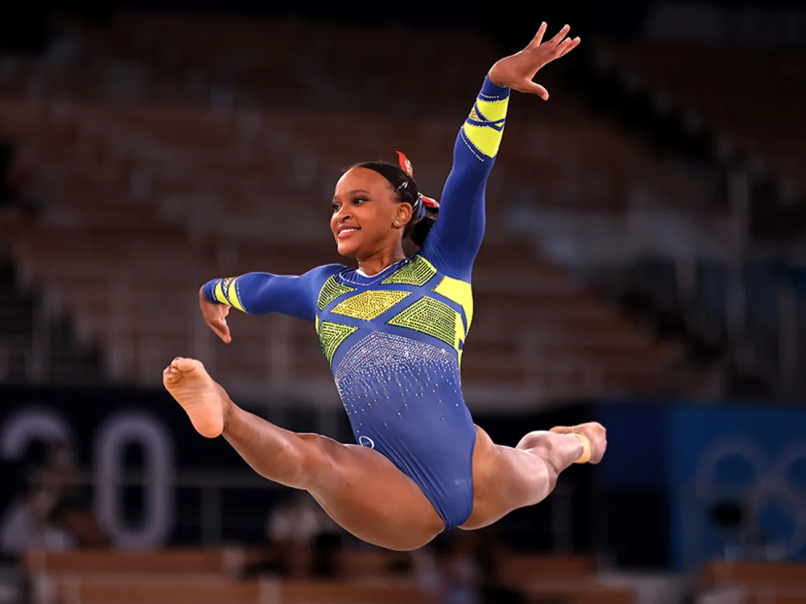
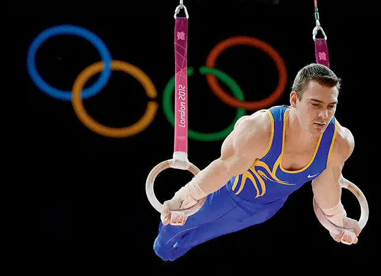

Atividade de Sistematização - Ginástica Artística
Integrantes: Arthur Adario, Eduardo Fabian, Carla Capeleto, João Fassina, Lucas Borges e Marco Antônio Molin
- História
- Aparelhos
- Provas escolhidas
- Análise Brasil e RS
A ginástica artística possui uma história milenar, com origens na Grécia Antiga e Egito Antigo, onde
pessoas realizavam acrobacias e exercícios físicos como forma de entretenimento e preparação
militar.
ressurgimento da ginástica artística na Era Moderna esteve ligado à arte, com as primeiras
atividades
descritas por Archange Tuccaro em seu livro sobre o trampolim.
Os seus conceitos se iniciaram no século XIX na Alemanha. O professor Johann Friedrich Ludwig Jahn,
“Pai da ginástica”, criou o primeiro “campo” de GA, na floresta de Hasenheide, Berlin. Os aparelhos
eram
improvisados em árvores e utilizados para fins militares.
Já no Brasil a GA chegou nos anos 1820, com a colonização alemã no Rio Grande do Sul. Entretanto,
apenas
no ano de 1951 ela foi corretamente oficializada como esporte, nesse mesmo ano o primeiro Campeonato
Brasileiro de Ginástica.
.(https://cbginastica.com.br/perguntas-frequentes)
(https://portalidea.com.br/cursos/bsico-de-ginstica-artstica-apostila04.pdf)
Em relação às posições existem 4: estendida, carpada, grupada e afastada. A posição estendida
contempla
o corpo reto e completamente alongado, sem flexão nos joelhos ou quadril. A posição carpada possui
flexão
de quadril com as pernas estendidas, em que ocorre aproximação dos membros inferiores ao tronco e
ângulo
mínimo de 90°. A posição grupada tem flexão de joelhos e quadris em aproximação ao tronco. A última
posição é a afastada, com pernas estendidas, em afastamento lateral, flexão de quadris e ângulo de
90°
mínimo.
Os aparelhos são divididos em masculinos e femininos. Os aparelhos femininos são: mesa de salto;
barras
paralelas assimétricas, trave de equilíbrio e solo (com acompanhamento musical). Os masculinos são:
cavalo com arções, argolas, mesa de salto, barras paralelas simétricas e barras fixas.
Trampolim de molas, mini trampolim ou minitramp, trampolim acrobático ou cama elástica, plinto,
plano
inclinado ou rampa, octogonal ou octógono, cogumelo e potrinho, banco sueco, espaldar e taquinhos.
Esses
são alguns dos equipamentos auxiliares e adaptados, que em sua maioria são utilizados na
aprendizagem de
fundamentos específicos de determinados aparelhos.
Existem também tipos de colchões para a ginástica artística, seja para proteção ou aterrissagem,
esses
são, Sarneige, Spieth, Colchão grande e gordo, módulo de salto, proteção de trave, utilizado para
amenizar o impacto no aparelho, proteção de paralela, utilizado para proteção de impacto contra o
barrote, barrinha, auxilia no aprendizado em barras paralelas simétricas e assimétricas.
Feminino:


Masculino:

 


Solo feminina:
A competição individual feminina de ginástica é realizada em um tablado de 12 metros por 12 metros e
envolve ginastas com idades entre 70 ou 90 segundos para executar uma sequência de acrobacias
impressionantes com giros elegantes enquanto dança ao som de uma música animada.
Um aspecto crucial para somar pontos é a performance das atletas durante a competição em que
precisam
executar acrobacias como saltos.
No solo feminino, a nota é avaliada com base em dois critérios diferentes, sendo eles a dificuldade
e a
precisão da performance.
Os árbitros analisam a desenvoltura da performance da atleta na execução precisa dos movimentos.
realizar as proezas sem falhas no solo feminino tem sido uma característica destacada do Brasil ao
longo
de sua história.
Cinco medalhas em competições internacionais, Rebeca Andrade e Flávia Saraiva representam esse
sucesso
no esporte.

Argolas para Homens:
As argolas (anéis) são um equipamento exclusivo da ginástica artística masculina e consistem em dois
anéis suspensos cerca de 2 metros e meio acima do solo. Durante a competição de ginástica artística é necessário exibir habilidades impressionantes;
mantendo o equilíbrio enquanto executam movimentos intricados com graça por um minuto inteiro.
Elementos essenciais como o “cruzamento lateral” e a “estrela”, que demandam muita força nos braços e no tronco.
Assim como no solo feminino, a avaliação na modalidade de argolas leva em consideração a
complexidade
dos movimentos.

No Brasil
A ginástica artística é regulada pela Confederação Brasileira de Ginástica que supervisiona o
esporte em
todo o país. Na região do Rio Grande do Sul, a Federação de Ginástica Artística, Rítmica, Trampolim,
Aeróbica e Acrobática (FGRS) tem uma função essencial na promoção e no avanço da modalidade,
apoiando
agremiações esportivas e competidores.
Os clubes da área local representados pelo Grêmio Náutico União e pela Sogipa exemplificam
instituições
que disponibilizam atividades de ginástica artística para impulsionar o desenvolvimento do esporte
na
região circundante. Essas organizações não se limitam apenas à promoção da competição esportiva;
elas
também defendem o exercício físico como uma alternativa saudável para todos os membros da
família.
Consequências e resultados
A prática da ginástica artística tem beneficiado de forma positiva o desenvolvimento motor das
crianças ao
estimular o crescimento dos ossos e músculos enquanto aprimora habilidades motoras essenciais para o
seu
desenvolvimento completo. No âmbito competitivo do esporte em terras gaúchas, tem sido notório o
sucesso
dos atletas em competições tanto a nível nacional quanto internacional, como é o caso dos Jogos
Olímpicos,
nos quais a participação dos ginastas do Rio Grande do Sul tem sido marcante.
Competições como o Campeonato Estudantil do Rio Grande do Sul (Cerg) desempenham um papel crucial na
descoberta e no incentivo de novos talentos esportivos, promovendo ainda mais o envolvimento dos
jovens
na prática esportiva, e o apoio das federações têm contribuído para um ambiente propício ao
crescimento
da ginástica artística na região.